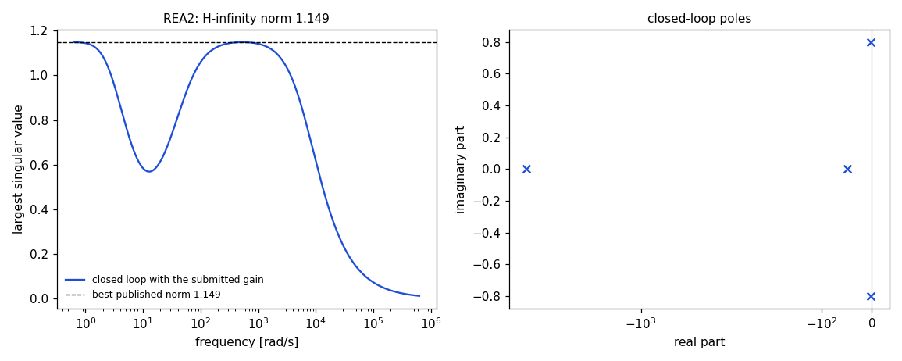

sof-hinf-rea2
Static output feedback H-infinity synthesis (COMPleib) · solved 6 of 6 agent attempts pass
more
Gate: within 5 % of the best published static-gain norm 1.149 (HIFOO, Gumussoy and Overton 2008). Not a frontier tier, by measurement: one minute of multi-start local search with scipy reaches the published value itself. Kept as the tier that proves the grader, the plant data and the contract; below_best (norm < 1.1485) is open, our best gain has 1.14893.
Gate. per-seed success is the `within_1p05x` rung of this benchmark's ladder ['stabilising', 'within_2x', 'within_1p05x', 'matches_best', 'below_best'] (`--success-mode within_1p05x`), not the evaluator's default flag; the task is solved when the success rate over the grader's held-out seeds is `>= 1`
Axes: family:synthesis, problem:sof-hinf, instance:REA2, gate:within_1p05x, incumbent:best-published-1.149, grading:exact-norm-no-rollout
Each video or figure re-runs the attempt's final controller through the task's own evaluator on a public seed (never the grader's held-out ones). The table under each one is the official grade on the held-out seeds.


REA2| criterion | graded | needed |
|---|---|---|
| base:within_1p05x | 1.000 | ≥ 1.000 |
The agent's final message
`/app/work/controller.py` now passes the gate: the closed loop is stable (spectral abscissa −2.63) with H∞ norm 1.148922, on seeds 0–4 and on 30 further seeds (100–129). That clears `stabilising`, `within_2x`, `within_1p05x` and `matches_best`; `below_best` (γ < 1.1485) is not reached. The gain is ``` K = [[-2806.7937, -2485.5277], [-2473.5891, -2196.6862]] ``` - **Structure:** the file builds `K = -5000·a bᵀ + (-3.494)·a⊥ b⊥ᵀ` from four design numbers. That is one high-gain loop pinning the output combination `bᵀy` near zero, plus one low-gain loop shaping the slow poles. The docstring explains each. - **Why `below_best` is out of reach:** the norm in this family falls steadily as the high gain grows and levels off at about 1.148918, which is the published 1.149 as rounded. Three global searches over the whole allowed gain box found only this family and a worse one at 1.339. These were about 1,300 Nelder-Mead starts, six differential-evolution runs, and a separate search of the infinite-gain limit. None of this is a proof, but nothing pointed below 1.1489. - **Choice of gain size:** I stopped at 5000 rather than pushing to the 1e4 entry limit. Going higher gains only about 3e-6 in norm. At this size the largest entry of `K` is 28% of the limit, and the grader's norm iteration converged on the gain and on 150 slightly perturbed copies. The session used about 27 of the 60 minutes. Scratch scripts and logs are in `/app/work/scratch/`; they are not needed by the control…
Shown: public seed 0 (REA2); this episode passes the within_1p05x rung. This episode: linear yes, stabilising yes, spectral_abscissa -2.63, hinf_norm 1.15, ratio_to_best 1, peak_frequency 0.51, norm_converged yes, gain_max_abs 2807. Left: the largest singular value of the closed loop over frequency; its peak is the H-infinity norm. Right: the closed-loop poles.
controller.py · trial sof-hinf-rea2__fVcYHaF